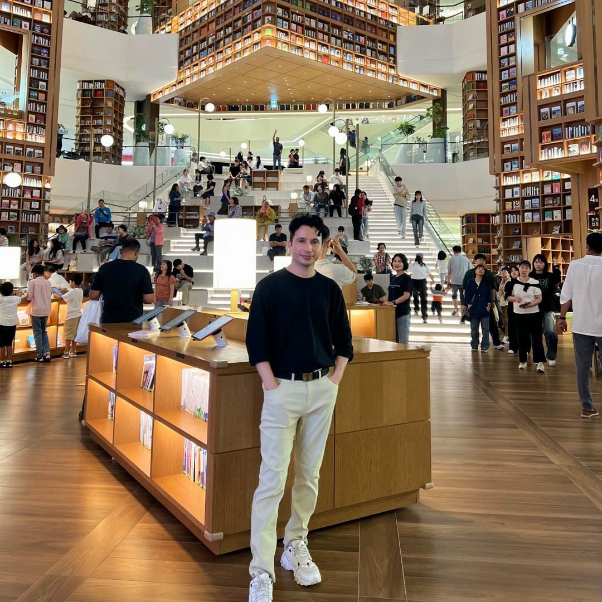

Saddiq Ur Rehman
PhD Researcher at Kyung Hee University
About Me
I am a PhD researcher in Architecture at Kyung Hee University, South Korea, working in the ITA Lab under the supervision of Professor Inhan Kim. I successfully defended my doctoral thesis in 2026 and am awaiting formal degree conferral. I hold a Bachelor’s degree in Civil Engineering from the University of Engineering and Technology, Peshawar, Pakistan.
My research lies at the intersection of construction informatics, Building Information Modeling (BIM), extended reality, AI, digital twins, and construction automation. I develop semantic and interoperable workflows that connect BIM with game engines, immersive interfaces, robotic systems, and real-time decision-support tools for modular and industrialised construction.
My selected work includes BIM-to-Unity semantic data exchange, Ifc2Unity and IFCExplorer, ReUniXchange, BIM-linked mixed reality inspection and reporting, conversational LLM interfaces for BIM querying, 4D BIM simulation, and digital-twin workflows for immersive AEC applications.
Research Interests
Building Information Modeling (BIM)
Semantic BIM data structures and open standards such as IFC that carry meaning across the project lifecycle
Construction Informatics
Information systems and data-driven methods that support decision making across the project lifecycle
Extended Reality (XR)
Immersive VR and mixed reality environments for design review, site inspection, and construction training
Construction Robotics
Connecting building models with robotic systems for automated fabrication and on-site operations
Design for Manufacturing and Assembly (DfMA)
Modular and off-site production workflows that bring manufacturing principles into building delivery
AI for Construction
Large language model and multimodal interfaces that let practitioners query and reason over building data
Digital Twin
Linking schedule and sensor streams to building models for 4D simulation and live, continuously updated twins
BIM Data Interoperability
Open standards such as IFC and semantic mappings that preserve meaning when models move between platforms